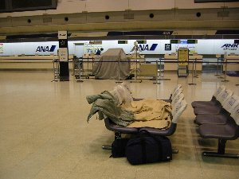
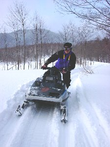
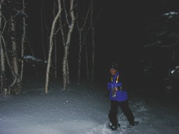

北海道アクティビティ | 2003年1/18〜20 |
|---|---|
| 私は何回か北海道には遊びに行っているが、今回はスキー以外の遊びがしたくて、千歳の友人を訪ねた。 目標はトマム。スキーヤーとしては、コースがあまり面白く無いようで不人気だが、HPで調べるといろいろ遊べそうだ。 金曜日、仕事がはねてから速攻で新幹線に乗り羽田を目指す。夜9：00発の千歳行き（最終）。 電光掲示板には「千歳が雪のため引き返すことも」と、あるが、私は今までこの手で引き返した事はない。案の定、無事に離陸。なぜか回りは外人さんばかり。 しかし、千歳に近づいた所で「滑走路が雪のため除雪中です。」と、アナウンスが入る。しばらく苫小牧上空を上空待機。 コックピットより「除雪は終わったのですが、滑走路が着陸に適さない為、羽田に引き返します」 え、！ 次第にエンジン音は高まり南へと進路を取る。 宿の手配をしてくれると思いきや、交通費5000円を渡され（手切れ金）、明日の便の予約を済ませると、毛布を渡されロビーを開放するのでお休み下さい。との事。 面白くなってきやがった！ 等と思いながらも、カウンター前の長いすを陣取り（TV「水曜どうでしょう」風に言うなら「ここを、キャンプ地とする！」）、明かりが消えないロビーで就寝（午前1：00）。 周りの外人さん（米国兵士と判明）は寝ずにガヤガヤしている。ウルサイ！ 翌日、無事千歳へ。友人と合流。 それから高速を使い、上富良野の十勝岳温泉へ。降る雪を眺めながら露天風呂で疲れを癒す。この時 -12℃。 | |
|  本日の宿泊地 羽田空港ＡＮＡカウンター前の椅子 |  クロスカントリー |
| 今回は宿を「ログハウス・トマム荘」としたはずだが、冬季閉鎖らしく姉妹ホテル「ホテル・グレーシィ・トマム」となる。 翌日は午前中クロスカントリースキーをやる。やっていたの僕らだけ。レンタルで一式借りて、それようのコースを歩く。初めて履くクロカンは、板がブーツ幅より狭く安定が悪い感じがした。エッジも無く、止まりにくい。 1周５キロのコースを写真を撮りながら、２時間かけてゆっくり廻る。天気も非常によく、気持ちが良い。UP・DOWNも少なく開けたコースなので（林間ではない）初心者には打ってつけだろう。 午後は宿でやっている「スノーモービル2時間山頂コース」に参加。8000円にオプションのパラセールをつけて１万円。また、僕らだけ。 これが、スゲー面白い！スノーモービル自体初めてだが、メチャ楽しい！ キチンとしたコースではなく、ただ、雪の中をモービルが走った跡があるだけの道。 UP・DOWNはあたりまえ。林を抜け、細いところあり、斜面あり、林の中や鉄塔の下、橋の下、とバラエティに飛び、山頂を目指す。 この時は、雪が降った後で、他のモービルが入っていないことも有り、非常にスタックしやすかった。やわらかい雪に ズボッ とキャタピラがめり込む感じ。もう、どうしようも無い！ 人が歩けば、膝まで埋まる場所での走行だから仕方が無いが、私も数回スタック！インストラクターもスタック！ こんな時は、モービルのケツを持ち上げて横にずらし、前から引っ張るのだが、我々のモービルは350ｃｃ、インストラクターのは推定600ｃｃ。クソ重たかった。 なんか、ニュージーランドでやった「４WDバギー」にそっくり。燃えます。インストラクター曰く、「山頂まで連れて行くツアーは他には無いと思いますよ」だって。そうかもね。 | |
|  快適なスノーモービル |  こんな所走ってます |
| 下の平地に降りてから、パラセールをやる。パラセールを付けて、それをモービルが引っ張って浮き上がる。時間にして30秒くらいだろうか？ 飛べます！ 2000円が高いかどうかだが、準備中などに自由にモービルに乗っていていいので、広いコースをスピードを出して乗れて楽しく、お徳だと思いますよ。 今回お世話になった「ホテル・グレーシィ・トマム」とても良いんだけど、難点を言えば、 １、「夕食を豊かにして」 一日目は「ジンギスカン」二日目は「チャンチャン焼き」と、それ自体は美味しいのだが、それだけでは寂しいです。もう２、３品増やしてくれるとうれしいな。 ２、「なぜか出始めのお湯が濁っている」 これはどうしようもないのか？温泉ではないが。 ３、「朝食時の食堂をもっと暖房効かせて」 これは夜-20℃を越した晩明けだけに、どうしようも無かったのか？ 上記内容でもっと良くなると思いますよ。でも、とってもアットホームで良い人たちですよ。笑顔で応えてくれるしね。 「ホテル・グレーシィ・トマム」http://www.big-hokkaido.com/gracey_tomamu/ | |
 スノーモービルでパラセールを引っ張ってます 飛んでるの分かります？ |  これがパラセールから引っ張っている スノーモービルを見た風景です |
| 夜は、20時から「夜の森をスノーシューで歩こう」ツアーに参加。また、僕らだけ。 車で近くの森へ。スノーシューを付けて、真っ暗な森の中へライトも付けずに歩き出す。林の中を縫うように進む。森はいたって静かで、動物の鳴き声さえしない。 昨晩、満月と言うことも有り、月明かりは眩しいくらいに、雪の上に樹の影を鮮明に落とす。 途中、開けたところで、雪の上に仰向けで横たわる。気温は-17℃だが、それほど寒さを感じない。感覚がおかしくなったのか？ 月明かりの中、 冬の星座が瞬いていた。 １時間も歩かないくらいだが、普段出来ない経験です。 今回のクロスカントリー＆夜の森ツアーは アルファリゾート・トマムhttp://www.tomamu.co.jp/ポーラービレッジ まで | |
 夜の森 −１７℃の中 雪原で仰向けになり夜空を見上げる |  スノーシューで夜の森を歩きます 明かりは月と星 |